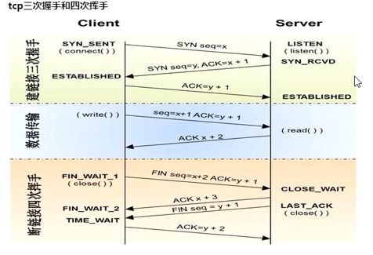
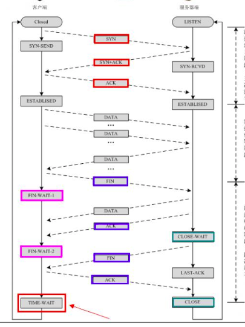
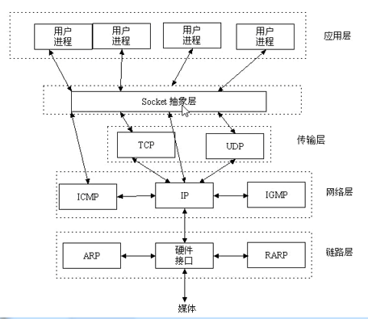

1.网络基础
回顾计算IP所处网段方式
#128 64 32 16 8 4 2 1
#IP1 = 192.168.9.1/24
# 11000000 10101000 00001001 00000001
#掩码 = 11111111 11111111 11111111 00000000
#网络位:11000000 10101000 00001001 00000000 192.168.9.0
#IP2 = 192.168.9.193/25
# 11000000 10101000 00001001 11000001
#掩码 = 11111111 11111111 11111111 10000000
#网络位:11000000 10101000 00001001 10000000 192.168.9.128
互联网本质: 物理连接介质 + 各种网络协议
网络封装用户数据:
1.应用层 --- 应用层协议封装用户数据 (http)
2.传输层 --- 对应用层数据增加端口到端口的协议 (tcp udp) # IP + 端口可以确认任何一台计算机上的一个软件
3.网络层 --- 对传输层数数据封装增加ip协议 (ip地址)
4.数据链路层 --- 通过高低电压分组使用以太网协议封装网络层数据 (mac地址)
5.物理层 --- 根据物理介质协议封装数据链路层数据
传输层TCP协议的三次握手四次挥手

三次握手
Client向Server发送SYN seq=x请求同步标记位
Server收到 ,返回ACK =x+1 确认连接 ,并发送SYN seq=y ,请求Client链接
Client收到 ,返回ACK =y+1 表示确认
双向通道全双工传输数据
四次挥手
Client发送FIN seq=x+2 请求Server断开 (表示Client到Server的通道数据已经传输完成)
Server收到回复 ACK=x+3 表示确认 ,至此双向通道的一条Client到Server端的通道关闭
Server也完成了数据传输 ,发送FIN seq=y+2 请求Client断开 (表示Server到Client的通道数据已经传输完成)
Client收到后回复 ACK= y+3表示确认断开 ,至此双向通道全部关闭
传输层TCP协议的三次握手四次挥手的各阶段状态
1.Closed状态: 表示连接关闭,没有连接
2.LISTEN状态: 表示服务端监听端口 ,等待客户端连接
3.SYN-SEND状态: 表示客户端已经发起了请求 ,等待服务端的响应
4.SYN-RCVD状态: 表示服务端已经同意连接,并向客户端发送连接请求等待确认
5.ESTABLISED状态: 表示tcp连接成功,开始传输数据
6.FIN-WAIT-1状态: 表示客户端主动断开连接,向服务端发送FIN等待确认断开
7.CLOSE-WAIT状态: 表示服务端确认了断开一条通道 ,并将数据传输完成 ,发送断开另一条通道
8.FIN-WAIT-2状态: 客户端的状态对应上面的CLOSE-WAIT中传输数据完成一段时间 ,等待服务端请求
9.LASK-ACK状态: 表示服务端发送了关闭最后一条通道 ,等待客户端确认
10.TIME-WAIT状态: 停留短暂时间, 确保服务端收到了ACK
11.CLOSE状态: 服务端进入关闭连接

2.socket
socket是在应用层和传输层之间的一个抽象层，它把TCP/IP层复杂的操作抽象为几个简单的接口供应用层调用已实现进程在网络中通信 ,帮助开发者仅关心上层应用

最简单的socket的tcp建立
socker对象的方法
accept() #当有客户端连接后 ,返回一个通道 ,一个客户端的地址+端口
bind() #绑定服务端地址
listen() #设置排队等待的客户端数量
recv(n) #接收数据,不超过n位 ,需要解码
send(x) #发送数据 ,网络传输需要编码
connect() #socket对象连接地址
close() #关闭socket对象的连接
import socket
phone = socket.socket() # 创建socket对象,默认tcp (默认tcp对象 type=socket.SOCK_STREAM)
phone.bind(('127.0.0.1', 8001)) # 暴露的IP+端口
phone.listen(5) # 设置排队的客户端数量
# conn是客户端发起的通道 ,addr是客户端的地址
conn, addr = phone.accept() # 阻塞监听
client_date = conn.recv(1024) # 从客户端通道接受数据 ,不超过1024位
print(client_date)
conn.send(b'ok') # 返回客户端数据
conn.close() # 完成后关闭通道
phone.close() # 关闭socket对象
#######################################################################################
import socket
phone = socket.socket()
phone.connect(('127.0.0.1',8001)) #连接服务端地址
phone.send(b'hello')
server_date = phone.recv(1024) #接收服务端数据
print(server_date)
phone.close()最简单的socket的udp建立
socker对象的方法
recvfrom(n) #接收数据最大不超过n位 ,返回值是数据和对端的地址+端口
sendto(msg,addr) #发送数据 ,必须编码传输 ,指定发送的地址+端口
import socket
S1 = socket.socket(type=socket.SOCK_DGRAM)
S1.bind(('127.0.0.1', 8002))
while 1:
msg, addr = S1.recvfrom(1024) # 两个返回值客户端数据+客户端地址
S1.sendto('{}-{}'.format(msg,addr).encode('utf-8'),addr)
S1.close()
import socket
S1 = socket.socket(type=socket.SOCK_DGRAM)
S1.sendto('hello'.encode('utf-8'), ('127.0.0.1', 8002))
msg = S1.recv(1024)
print(msg)
S1.close()
3.粘包问题
subprocess本地调用命令模块 ,调用中出现了粘包问题 ,当revc(1024)每次从系统缓冲区拿1024byte ,但是数据超过1024那么没被取过的数据会存在系统缓冲区 ,造成执行下一个命令会出现上一个命令的残留结果
现象代码
import socket
import subprocess
S1 = socket.socket()
S1.bind(('127.0.0.1', 8080))
S1.listen(5)
while 1:
conn, addr = S1.accept()
while 1:
cmd1 = conn.recv(1024).decode('utf-8')
if cmd1 == b'bye':
break
msg = subprocess.getoutput(cmd1)
conn.send(msg.encode('utf-8'))
conn.close()
S1.close()
########################################################################################
import socket
C1 = socket.socket()
C1.connect(('127.0.0.1', 8080))
while 1:
cmd1 = input('CMD:')
C1.send(cmd1.strip().encode('utf-8'))
if cmd1 == 'bye':
break
S_data = C1.recv(1024)
print(S_data.decode('utf-8'))
C1.close()解决粘包代码 ,接收数据时按照自定义头部大小来接收 (subprocess模块的getoutput方法返回str有长度限制 ,所以还是使用实例化Popen完成获取标准输出标准错误)
import socket
import struct
import subprocess
server1 = socket.socket()
server1.bind(('127.0.0.1', 8080))
server1.listen(5)
while 1:
conn, addr = server1.accept()
while 1:
try:
client_date = conn.recv(1024)
obj = subprocess.Popen(client_date.decode('utf-8'),
shell=True,
stdout=subprocess.PIPE,
stderr=subprocess.PIPE)
ret = obj.stdout.read() # gbk编码的byte类型
ret1 = obj.stderr.read() # gbk编码的byte类型
date_size = len(ret1 + ret) # 把标准错误与标准输出全部传给客户端
print(date_size)
head = struct.pack('i', date_size) # 将数据长度压缩为4字节byte
conn.send(head)
conn.send(ret + ret1)
except:
break
conn.close()
server1.close()
################################################################################
import socket
import struct
C1 = socket.socket()
C1.connect(('127.0.0.1', 8080))
while 1:
cmd1 = input('CMD:')
C1.send(cmd1.strip().encode('gbk'))
if cmd1 == 'bye':
break
S_data_size = struct.unpack('i', C1.recv(4))[0] # 总数据大小
already_size = 0 # 已经接收数据大小
S_data = b'' # 接受数据byte拼接
if S_data_size < 1024:
S_data = C1.recv(1024)
else:
while already_size < S_data_size:
now_data = C1.recv(1024)
S_data = S_data + now_data
already_size += len(now_data)
print()
print(S_data.decode('gbk'))
C1.close()